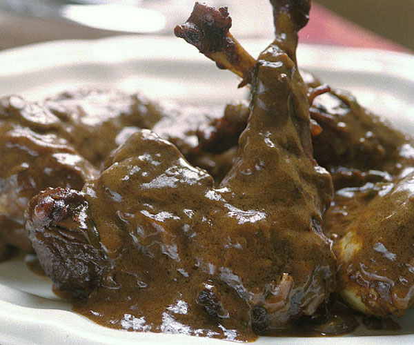

Chicken Paprikas
Chicken Paprikas

Yields 4 servings
While old-school Hungarian cooks would use lard instead of oil and probably double the amount of sour cream, this somewhat lighter version is equally delicious and more to American tastes.
Recipe Ingredients
- 1 cup homemade or low-salt canned chicken stock
- 3 Tbs. oil
- 1/2 cup chopped onion
- 2 Tbs. sweet paprika
- 1 3-lb. chicken, cut into four pieces, or 2-1/2 lb. chicken pieces (thighs work nicely)
- Salt and freshly ground black pepper
- 1 large green bell pepper, cored, seeded, and chopped into 1/2-inch pieces
- 1 large tomato, peeled, seeded, and chopped or 3 canned seeded, chopped tomatoes
- 1 Tbs. flour
- 1/2 cup sour cream